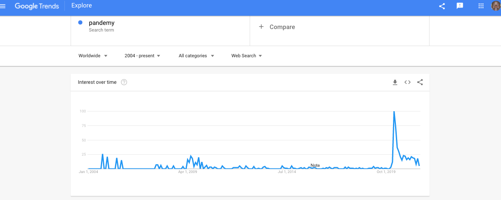

This MacBook extension for all laptops
seems I often postpone hardware product ideas while I should not because of you

This MacBook extension is really a need for me and for sure there are out there a lot of people, maybe like you, who also need it because they have a MacBook and care about what is best for apple that’s why they always buy Apple’s products. Then designing it and building it matter for me to be more productive because being more productive will help me share more with you like I am doing right now writing about technology and product design. It requires part design skills but I am glad that I used to design mechanical parts with Catia between 2003 and 2005 and have used to play with photoshop since its first versions. I just came to read about Apple’s consideration for product manager and other tech companies like Microsoft, Amazon, Google, ,, Writing these first name of companies reminded that it matters to list them in order birth and probably here is maybe only where age matters because each of these tech giants opened doors for the next one and there are of course many other in between but these are who got more awareness from the mass while other are known to specialists like you and me. then I will not mention the next ones but I also have read about their considerations about product managers today. They all care about product managers that could pop up fastly product ideas that users, consumers, and people like and this extension can be on almost every laptop. But if I constrain it to fit an apple product I am constraining myself to high design standards but for sure other laptop manufacturers also make well-designed laptops and I know that I am just telling myself a story that apple sold me. I remarked that I said apple more than other tech companies but it happens that this extension I am writing about is a hardware product then it concerns more apple than the other tech companies that I highlighted but they also care about it because computers are part of their success and they all care about them and work with them like me and you.
The best product managers can evaluate and seize the market of a product idea and the product development should start from the end-users or end customers because it is for them and about them. they should all like the product and be eager to buy and use it because it really solves one of their pains and does something else great which they were not expecting and makes the product very worth telling and explaining to others what I am actually doing with this MacBook Extension for all laptops that should be designed and built for you and me to use. Then the unexpected benefit a least made me tell it to you and I don't know if it will for you. That’s something that will be known once the first test product will be in front of a test subset of the minimum viable audience it is intended then there is a lot of tasks to achieve before learning if it does this unexpected effect but it should first solve the pain by achieving correctly its functional purpose. The unexpected effect is a marketing benefit that makes the product viral but spreading something bad is not good for the world we came to learn something about this coronavirus that spread from country to country and I am praying for it to leave everybody in peace and health and let us live our life by the help of God to whom I owe belief and I don't care if you have not the same belief than me but I wish you all the best and include you in this prayer. Forgive me because this is not about religion but about product design and management, marketing, and engineering with a lot of business management theories and best practices. writing the word ‘’pandemy’’ just made me afraid that’s why I prayed that’s how we believers do we pray when we are afraid but I should confess that I cry most than I pray and I very often not grateful when I am safe. One of my belief is that who is not grateful to God cannot be grateful to people and being grateful to people is a fast way and open door to Him. I hope you are not at my place because numbers really don't bear witness with me when it's about God as they do for me with math, business, and technology.
You have in these words above a perfect example of how from a simple word can emerge paragraphs of text that could be out of topic. I am lucky to not diverge further from the topic because of the word numbers I used above but let just see a number about the word pandemy before coming back to our MacBook extension for all laptops

As I said Macbook while I could just say laptop extension here is the volume of MacBooks sold each year for seizing the audience of this product I am writing about.
Can you build a forecasting table with the possible volume of sales given different levels of market share when the whole market is the same as the MacBook because it is a MacBook extension?
For you is it better to make it for MacBook only or for all laptop brands?
Like I was testing MBA students, this article
and this book about learning simulation games I have read today really amplified my interest in disruptive learning experiences but you can remark that I was writing about the university and learning a long time before by reading my past articles.
There are really a lot of amazing things to do with business education not only hardware products but this hardware product is really useful for me I hope it will be for all laptop users.
A great disruptive business education idea is in its way. Be ready for learning and leading before because you deserve the pole position when it is about business more if you are interested in the tech business.